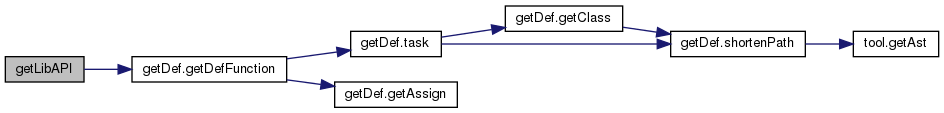
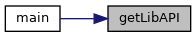
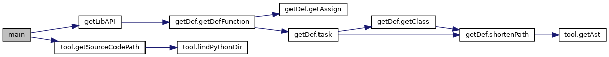

|
PCART
|
Functions | |
| def | getLibAPI (version, sourceCodePath) |
| Extract API definitions for a given library version 抽取给定库版本的API定义 More... | |
| def | main () |
| Main function of extracting lib API definitions 抽取库API定义主函数 More... | |
| def extractLibAPI.getLibAPI | ( | version, | |
| sourceCodePath | |||
| ) |
Extract API definitions for a given library version 抽取给定库版本的API定义
| version | An specific library version |
| sourceCodePath | The source code path of the library |
Definition at line 24 of file extractLibAPI.py.


| def extractLibAPI.main | ( | ) |
Main function of extracting lib API definitions 抽取库API定义主函数
Definition at line 32 of file extractLibAPI.py.
